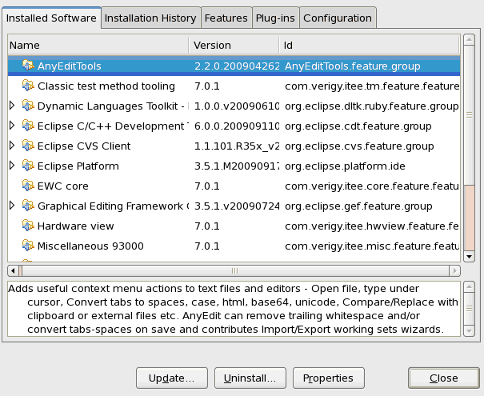
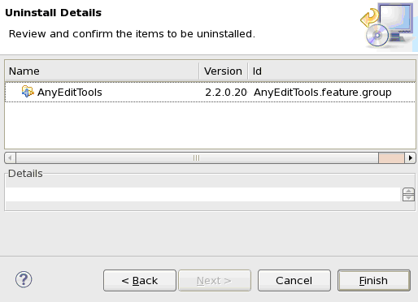

Uninstalling third-party plug-ins
About this task
This task describes how to uninstall third-party plug-ins. The procedure of uninstalling is dependent on how the plug-ins were installed:
- The plug-ins were installed for all users (single-point administration).
- The plug-ins were installed for a single user (per-user administration).
Choose one option and perform the related steps.
Before you begin
The SmarTest software must be running.
Procedures
The plug-ins were installed for all users
- Check whether the plug-ins were installed in the predefined directories or in special
separate directories.
- If the plug-ins were installed in the predefined directories, remove the
*.jar files and subdirectories in the following
directories:
<installation directory>/eclipse/features
<installation directory>/eclipse/plugins
Note Do not delete the SmarTest features and plug-ins. They are located in the following directories: /opt/hp93000/soc_<smartest revision>/eclipse/verigy/eclipse/features /opt/hp93000/soc_<smartest revision>/eclipse/verigy/eclipse/plugins - If the plug-ins were installed in special separate directories, remove the link file
at
/opt/hp93000/soc_<smartest revision>/eclipse/eclipseRE/links/<link file>
- If the plug-ins were installed in the predefined directories, remove the
*.jar files and subdirectories in the following
directories:
- Shut down and restart SmarTest.
The plug-ins were installed for a single user
- In the SmarTest Work Center, choose .
The following window opens.

- Click the Installation Details button, the SmarTest
SmarTest Work Center Installation Details window opens.

- On the Installed Software tab, select the feature to be
uninstalled configurations list. Then click
Uninstall.
The Calculating Requirements window opens.
- After the Calculating Requirements progress is finished, the
Uninstall window opens for you to confirm the features to be
uninstalled. Click Finish.

- A message window appears, which tells you that you need to restart SmarTest. Click Yes.
- Start SmarTest again.
Results
The plug-ins are uninstalled.
What to do next
Functional changes
- Introduced before SmarTest 6.3.2
- SmarTest 7.0.1: The procedure of uninstalling the plug-ins installed for a single user has been changed.